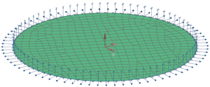
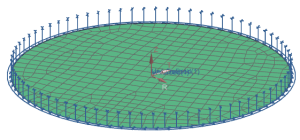
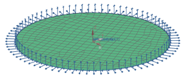

Edit the constraint displays
There are two separate constraints defined for the outer edge of the plate, but they are difficult to see with the default offset constraint symbol display. Edit the display to show the symbols for both constraints.

 Simulation Navigator
Simulation Navigator
-

 Linear Solve (expand)
Linear Solve (expand)
-
Constraints (expand)
-
UserDefined(1)
-
 Edit Display
Edit Display -
Display Mode
-
 Expanded
Expanded -
OK

-
Follow the steps above to turn on the expanded display for the enforced displacement constraint.

You can now see both constraints more easily in the model.